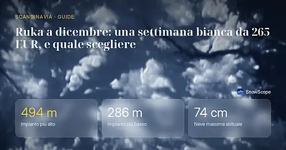
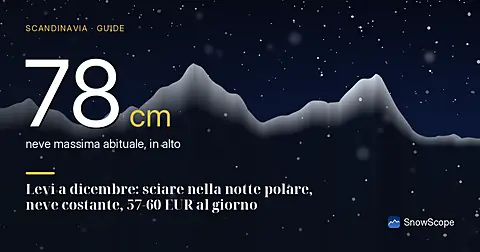

Bollettini neve · Scandinavia
Bollettini neve quotidiani per sciatori: dove c'è neve, cosa arriva e dove sciare, dalla mappa neve di SnowScope e dalle stazioni di misura. Ogni numero viene dai dati del giorno.
La neve per paese oggi
I paesi più bianchi oggi: Sweden (96 %), Finland (95 %) e Norway (93 %).
Più neve fresca nella settimana: Norway (31 cm), Sweden (16 cm) e Finland (6 cm).
La neve oggi nelle grandi stazioni
- Abisko · 137 cm
- Sulitjelma Fjellandsby · 124 cm
- Tromsø Alpinpark · 70 cm
- Bydalsfjällen · 46 cm
- Gräftåvallen · 45 cm
- Hemsedal skisenter · 41 cm
- Orsa Grönklitt · 41 cm
- Myrkdalen · 36 cm
- Jølster Skisenter · 35 cm
- Volda skisenter · 32 cm
- Åre · 32 cm
- Hornindal · 31 cm
- Järvsöbacken · 30 cm
- Lindvallen · 27 cm
- Surnadal · 26 cm
- Sunndal alpinsenter · 25 cm
- Rukatunturi · 24 cm
- Tusten Skiheiser · 24 cm
- Kiririnteet · 23 cm
- Ramundberget · 23 cm
- Saariselka · 23 cm
- Ski Saariselkä · 23 cm
- Skarmoen Alpinpark Bodø · 21 cm
- Storlien · 21 cm

Le probabilità di neve a Idre Fjäll a dicembre migliorano nettamente dopo metà mese. Il 13 novembre, la profondità tipica a media montagna il 15 dicembre è di 32 cm.

Sälen a dicembre: 28 cm in un tipico 15 dicembre e 48 % degli inverni con 30 cm a metà dicembre, meno che negli anni '80; Trysil accanto fa meglio.

Lo skipass di 6 giorni a Ruka costa EUR 265. Le probabilità di neve passano dal 39% all'inizio di dicembre all'85% nella settimana di Natale. Pianifica da metà mese in poi.

La mezza montagna di Hemavan ha 82 cm di neve il 15 dicembre medio. In ogni inverno dei 46 anni di dati, a metà dicembre c'erano almeno 30 cm. Dati dal 13 novembre 2026.

La base di Oppdal ha 60 cm di neve in un tipico 15 dicembre, con il 93% degli inverni che mantengono 30 cm o più a metà dicembre. Dati da 46 inverni.

La fascia media di Geilo rimane sciabile nel 96% dei dicembri. Profondità tipica al 15 dic: 42 cm in basso, 57 cm in mezzo, 68 cm in alto. Giornaliero da NOK 590.

Il 15 dicembre, Hemsedal mostra 32 cm alla base, 70 cm a mezza montagna e 106 cm in vetta. L'altitudine è tutto qui.

La neve di dicembre a Levi si è rafforzata nel tempo. Ultimi 15 inverni: 100% delle settimane natalizie ha avuto 30 cm o più. Profondità tipica 15 dicembre: 38 cm. Dati 13 novembre 2026.

La neve a mezza montagna raggiunge 30 cm nell'83–100 % dei diciembri in Scandinavia. Prezzi fissi in Finlandia; prezzi dinamici in Norvegia e Svezia. Dati da 46 inverni, 13 novembre 2026.

Trysil a dicembre: 44 cm a metà montagna in un tipico 15 dicembre, 83 % degli inverni con 30 cm a metà dicembre; i prezzi sono dinamici, quindi prenotate presto.

Prenota 15-21 dicembre ad Åre per le migliori probabilità di neve prima della folla natalizia. L'89% degli inverni ha avuto 30 cm a mezza montagna quella settimana. Dati del 13 novembre 2026.